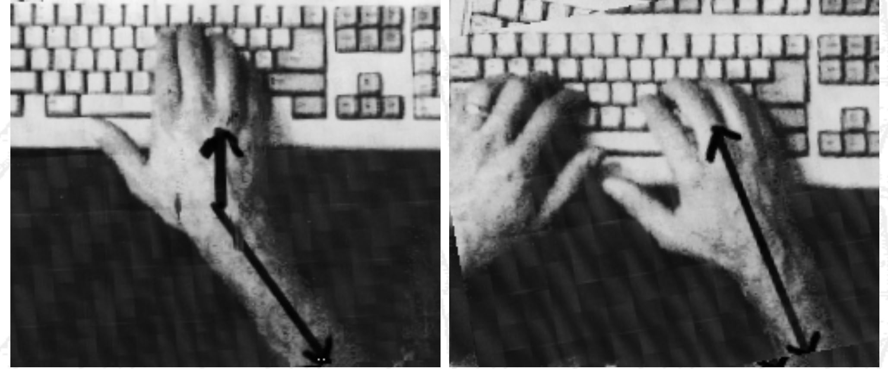

Human beings tend to believe what their eyes tell them
over what other senses are telling, so by giving stimulus to the
eyes we can 'fool' the brain.
Carpal Tunnel Syndrome / Repetitive Stress Injuries
2 things are needed: a functioning vestibular system (canals in the inner ear) and a sense of motion
Symptoms: Nausea, eyestrain, blurred vision, difficulty
concentrating, headache, drowsiness, fatigue
These symptoms can persist after the experience is finished.
Causes: still unknown but most common hypothesis is a mismatch between visual motion (what your eyes tell you) and the vestibular system (what your ears tell you)
Why would this cause us to become sick? Possibly an inherited trait - a mismatch between the eyes and ears might be caused by ingesting a poisonous substance so vomiting would be helpful in that case.
fighter pilots have 20 to 40 percent sickness rates in flight simulators - but experienced pilots get sick more often than novice pilots.
In a rotating field when walking forward, people tilt their heads and feel like they are rotating in the opposite direction.
If a person is walking on a treadmill holding onto a stationary bar and you change the rate the the visuals are passing by, it will feel to the person like the bar is pushing or pulling on their hands.
Its easy (and fun) to induce vertigo.
vection - A person viewing a display with moving objects
often feels that he/she is moving in the opposing direction.
Sickness is reduced when you have a stable reference
frame (i.e. being able to see the border of the screen.) This is
why in most current HDM VR games that involve flying you get a
stable cockpit around you. Most current Head Mounted Display games
don't let you use your controller to 'run' through a scene and
only let you teleport to reduce the chances of getting sick. When
moving in the HMD version of Google Earth they reduce the field of
view to remove motion in the periphery of your vision for the same
reason.
Nintendo released their first VR game console, the
Virtual Boy, in 1995. They decided not to make it a Head Mounted
Display for safety reasons - not wanting people to run into things
or fall down the stairs while wearing it. The console also forced
the player to stop playing every 15 minutes or so to rest their
eyes.
The Pokemon Incident
December 16 1997
685 schoolchildren taken to hospitals- feeling sick while watching Pokemon
12 Hz red - blue flicker scene lasting about 5s roughly 20 minutes into the program
Show aired in several major cities (Tokyo, Osaka, etc) and then excepts were shown on the nightly news after reports came in - causing more cases. Broadcast of the show was cancelled in 30 other cities.
Pokemon incident was the first occurrence on a mass scale
New type of trigger, not just rapid light/dark - this is
now known as "chromatic sensitive epilepsy."
The episode was pulled, but of course many people had
their VCRs (Video Cassette Recorders) running so copies exist and
these days you can find it on YouTube in various places by
searching pokemon epilepsy - the videos keep getting removed and
then added again with different links.
https://www.youtube.com/watch?v=Wu-KAY3lJ6A
Back in 2008 there was a lot of coverage on the
internets about some rather nasty things posted to the Epilepsy
Foundation's message boards - very simple animated GIFs could
cause people to have seizures.
20 years after the Pokemon Incident there have been a
series of Pokemon Go related incidents including traffic accidents
(driving while playing and walking while playing), walking /
falling accidents, robberies / assaults, etc. as people are
concentrating on their phones and not on their surroundings.
Similar things happen with texting. The game or application itself
is not directly to blame for the injury, but is involved, and as
we move towards augmented reality displays, and 'always on' and
'always visible' information flows we have to help people balance
their lives in the real world and the virtual world that we are
all increasing simultaneously inhabiting.